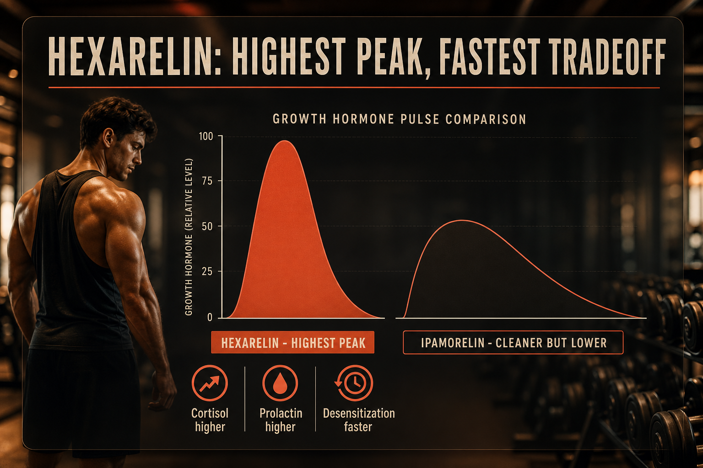

What Hexarelin Is
Hexarelin is a synthetic hexapeptide GHRP developed in the 1990s. It produces the largest single GH pulse among available GHRPs - larger than GHRP-2, GHRP-6, and Ipamorelin. This is its primary advantage and its main limitation. The strong GHSR receptor activation elevates cortisol and prolactin more significantly than Ipamorelin's selective mechanism, and receptor desensitization occurs faster.
Secondary: Hexarelin independently binds CD36 receptors in cardiac tissue producing cardioprotective effects in animal models, independent of its GH effect.
Plain English Version
The Racing Engine vs The Tuned Engine
CJC+Ipamorelin is a tuned engine for consistent sustainable performance. Hexarelin is the modified version for maximum peak output. Higher top speed, but it wears out faster and runs hotter.
For short-term protocols where maximum GH output is the goal - aggressive body recomposition, recovery from major injury - that peak output has real value. For sustainable long-term GH support, Ipamorelin's cleaner mechanism wins.
One sentence: Hexarelin produces the strongest GH pulse of any GHRP - more potent than Ipamorelin, faster desensitization, and more cortisol/prolactin elevation as the tradeoff.
How To Picture It

How It Works
Hexarelin binds GHSR receptors with higher affinity than other GHRPs, producing stronger GH release per dose. Independently binds CD36 in cardiac tissue producing cardioprotective effects. Cortisol and prolactin elevation are downstream GHSR-mediated effects that Ipamorelin's selective design specifically avoids.
Documented Benefits
independent of GH
Dosing Protocol
| Phase | Dose | Frequency | Timing |
|---|---|---|---|
| Starting | 100mcg | Once daily fasted | Bedtime |
| Standard | 100-200mcg | Twice daily fasted | Bedtime + morning |
| Maximum | 200mcg | Twice daily | Do not exceed |
| Cycle | 4-6 weeks | — | 4 weeks off |
Reconstitution Standard
HX (2mg vial) + 2ml BAC water = 1mg/ml 100mcg = 10 units | 200mcg = 20 units
Dosage Build-Up Timeline
- Week 1-2: 100mcg once daily - assess response
- Week 3-6: 100-200mcg twice daily - peak protocol
- Week 7+: If desensitization apparent begin cycle off
- 4 weeks off before resuming
Common Mistakes
faster desensitization than other GHRPs
more relevant here than Ipamorelin
different protocol roles
same fasting requirement as all GH peptides
Contraindications And Cautions
discuss CD36 mechanism with cardiologist
GH affects insulin sensitivity
WADA prohibited
monitor mood, body fat, metabolic markers
What To Track
- Body composition monthly
- Sleep quality
- Cortisol and prolactin bloodwork at 4-week mark
- IGF-1 baseline and cycle end
- Water retention and joint tenderness
Stacks Well With
- CJC-1295 no-DAC - adds GHRH component, reduces Hexarelin dose needed
- BPC-157 or KLOW - tissue repair alongside GH
- Retatrutide - metabolic plus GH
Sources
- PeakedLabs. CJC+Ipamorelin Stack Hexarelin comparison 2026. peakedlabs.com
- Muccioli G et al. Hexarelin cardiovascular activities. pubmed.ncbi.nlm.nih.gov
- PubMed: Hexarelin CD36 cardioprotective. pubmed.ncbi.nlm.nih.gov
- WADA Prohibited List 2025. wada-ama.org
For educational and research documentation purposes only. Not medical advice. Always speak with a qualified healthcare professional before making health decisions.